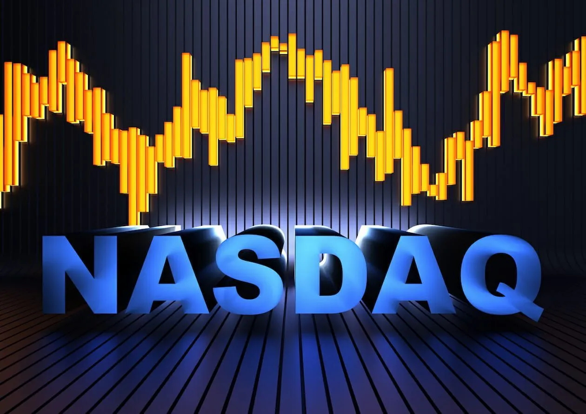
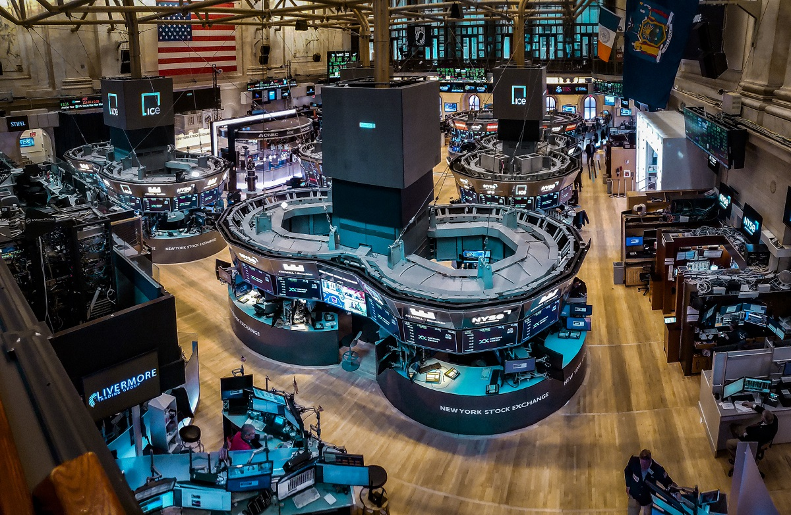

Treding Haqida malumot
Aksariyat investitsionlar, korporatsiyalar va insonlar uchun bozorlar, yozmaqomalar, aksiyadorlik jamiyatlari va boshqa moliyaviy vositalar orqali olib boriladigan birinchi bozorlar borsa bozorlardir. Ularning orasida eng mashhur bozorlar borsa bozori yoki hisoblanadi. Bu bozorlarda, kompaniyalar o'z aktsiyalarini sotish va sotib olishadi, shuningdek, investitsion fondlar, pensiya fondlari va boshqa investitsion o'qituvchilari tomonidan amalga oshiriladigan moliyaviy operatsiyalar ham olib boriladi. Borsa bozorlarida har bir kompaniya uchun aktsiyalarini baholash uchun foydalaniladigan bir necha moliyaviy va statistik indikatorlar mavjud. Ba'zi mashhur borsa indekslari, masalan, S&P 500 (Amerika Qo'shma Shtatlari), FTSE 100 (Birlashgan Qirollik), va Nikkei 225 (Yaponiya), dunyo bo'ylab yangi xabarnomalar va siyosiy voqealarni o'z ichiga oladi. Investitsion faoliyat bilan shug'ullanishda, insonlar va korporatsiyalar o'z moliyaviy maqsadlari uchun moliyaviy vositalarni sotib olish va sotishlari mumkin bo'lgan bir nechta usullardan foydalanishadi. Bunday operatsiyalarda risklar mavjud bo'lib, bozorlar har bir kunda o'zgarishi mumkin. Borsa bozorlarining faoliyatini tushunish uchun boshqacha o'rganish, malumot izlash va tahlil qilish, moliyaviy tajribaga ega bo'lish, va ekspertlar tomonidan taqdim etilgan yangiliklar bilan tanishish yaxshi bo'ladi.
Nasdaq Haqida
NASDAQ, National Association of Securities Dealers Automated Quotationsning qisqartmasi hisoblanadi. Bu Amerika Qo'shma Shtatlari bozorlarida eng mashhur elektronik aktsiya bozorlaridan biri hisoblanadi. NASDAQ kompyuter tizimida, aktsiyalarni avtomatik ravishda sotib olish va sotish imkoniyatlarini taqdim etadi. Keyingi xususiyati bor borsa bozorlaridan biri bo'lgan NASDAQ, birinchi bo'lib sotish qilish yoki kompaniyalarni ro'yxatdan o'tkazish uchun yangi, innovatsion modelni qo'llab-quvvatlashi vaqti bilan mashhur bo'ldi. NASDAQ bozori 1971-yilda o'z faoliyatiga boshlagan va boshlang'ichda tadbirkorlar va texnologiyalar sohasiga qiziqishgan kompaniyalarga xizmat ko'rsatish maqsadida yaratilgan edi. NASDAQ bozori katta va kichik korporatsiyalarni jamlab o'z ichiga oladi va bir qancha sohada ommalashgan kompaniyalarni o'z ichiga olgan bir bozordir. Bu bozor, biror bir kompaniya aktsiyalarini harid qilish uchun qo'llaniladigan elektronik tizimga ega bo'lgan bir bozor bo'lib, bunga katta investorlar, fondlar, banklar va boshqa tadbirkorlar kiradi. NASDAQ, xususiyatlarini yuqori darajada avtomatlashtirilgan tizimlar, elektronik harid va sotish platformalari, yangi texnologiyalar va xususiy uskunalarni qo'llab-quvvatlash orqali yangi korporatsiyalarga va tadbirkorlarga yordam bera olishi bilan mashhurdir. Bozorda, aktsiyalar qisqa muddatli sotish-olish (day trading) va yuqori darajada likvidlik mavjud.

New York Fond birjasi
New York Fond birjasi (NYSE), Amerika Qo'shma Shtatlari'ning eng katta va eng eski hisoblanadigan moliyaviy bozorlaridan biridir. NYSE, 1792-yilda tuzilgan va qo'shma shtatlarning moliyaviy tizimining asosiy qismi sifatida faoliyat yuritmoqda. NYCE, Manhattan, New York shahrida joylashgan va Wall Street nomli joyda ommalashtiriladi. Bozor, katta korporatsiyalarning, banklarining, tadbirkorlarning va boshqa moliyaviy tashkilotlarining o'zlarini aktsiyalarini sotib olish va sotishlari uchun xizmat ko'rsatadi. NYSE aktsiyalari, obligatsiyalari va boshqa moliyaviy vositalarni o'z ichiga olgan bozor sifatida taniladi. NYSE'da har bir tadbirkor uchun biror bir aktsiya turkumi ro'yxatdan o'tiriladi va ommaviy aktsiyadorlar uning hissasini sotib olishlari mumkin. Korporatsiyalar o'z aktsiyalari orqali kapitalni jalb qila oladilar va bu kapitalni yangi loyihalarni boshlash, tashkil etilishi yoki boshqa moliyaviy operatsiyalar uchun ishlatishlari mumkin. NYSE keng o'lchamli bozor, tajribali tadbirkorlar va katta kapitalni jalb qilgan korporatsiyalar uchun o'z maqomini saqlaydi. Bozorda foydalanuvchilarga hisob-kitobni yuritish, moliyaviy tahlillar olib borish va istiqomat qilish imkoniyatlari mavjud. NYSE, moliyaviy tizimning eng muhim va tajribali bozorlari orasida o'z o'rniga ega.
